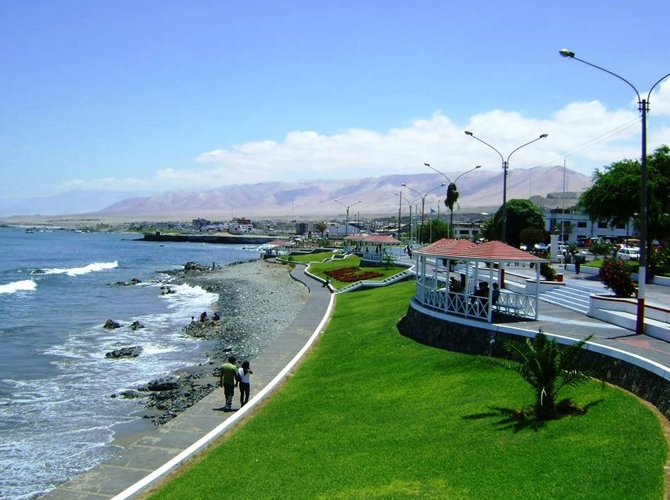
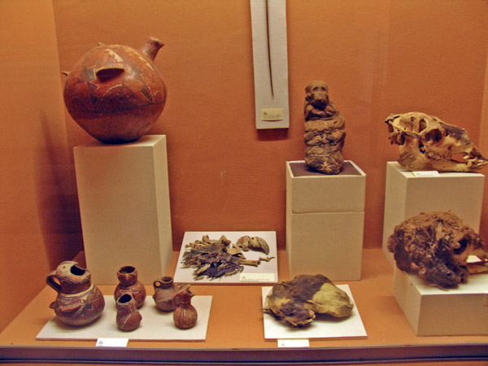
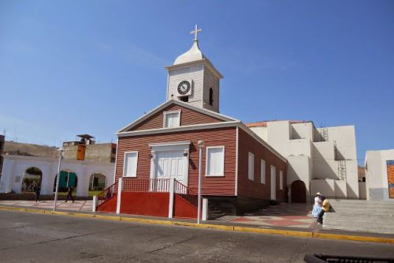
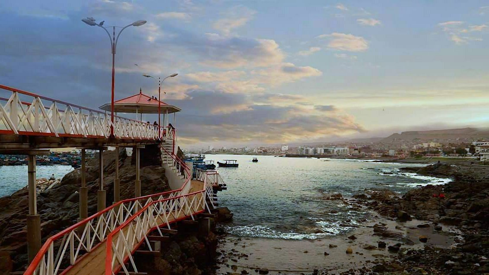

LUGARES TURISTICOS DE ILO
1- Malecón Costero:
El Malecón Costero es el excelente lugar que brinda el ceviche más fresco y apetitoso, además ofrecen otros platillos de mariscos. Pregúntele al cordial propietario que se encuentra en frente loa otros platillos especiales que se brinda. Te sorprenderá con las porciones enormes. Tiene una extension de 1.6 kms y cuenta con vistas inolvidables del mar en Perú.

2- Museo Municipal De Sitio Chriribaya:
A solo 16 km tierra adentro especialemente en El Algarrobal se localiza el bello Museo Municipal de Sitio Mallqui, el cual hospeda una sorprendente recopilación de exhibiciones sobre la prehistoria y la agricultura de la región de Ilo, este contienen porcelana, textiles, una recopilación de sombreros con barras de plumas y una soflama momificada que se localiza en las tumbas contiguas.

3- Plaza De Armas:
Se determina por ser una de las más bellas de todo el país. Aquella posee la particularidad de hallarse cercada de una productiva vegetación, igualmente próxima de esta, se halla el bello y caritativo Templo de San Jerónimo.

5- Templo San Jeronimo:
Este santuario tiene un registro de la década de 70 época perteneciente al siglo XIX. Actualmente logramos observar las transformaciones en la parte posterior del templo, es una restauración notoriamente, moderna. Este se mantiene abierto durante el día. Para que los turistas puedan disfrutar de su hermosa estructura.

6- Muelle Fiscal:
Tiene un registro del siglo XIX. Este cuenta con tres tribunas de cemento y madera. En Ilo igualmente son atrayentes sus balnearios, entre los más populares destacan: la playa las Enfermeras, la Playa Platanales, la espectacular Playa Piedras Negras, que lleva dicho seudónimo por la gran cantidad de piedras que en este sitio se insertan por las fuertes olas.
